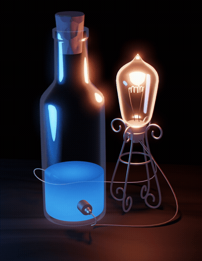
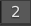

Toon Glass in Blender
Overview
Prerequsite Knowledge: Connecting nodes in the Shader Editor
In this tutorial, you'll create the toon glass shader for Blender's Eevee renderer, shown below:
This shader is composed of 3 parts: Frost, Highlight, and Specular.
1 Set Blend Mode
A material in Blender Eevee won't render as transparent until you set its Blend Mode and Shadow Mode.
- Go to Material Properties > Settings.
- Set Blend Mode to Alpha Blend.
- Set Shadow Mode to Alpha Hashed.
2 Create the Frost node
First you'll make the Frost node.
- In the Shader Editor, press
SHIFT
+A
. - Search and add the following nodes:
FresnelMap RangeTransparentEmission
Now connect the nodes to create a node tree.
- Connect the nodes as follows:
Fresnel : FAC--->VALUE : Map Range
Map Range : RESULT--->FAC : Mix Shader
Transparent : BSDF--->SHADER[1] : Mix Shader
Emission : EMISSION--->SHADER[2] : Mix Shader
If you plug Mix Shader into Material Output,
you will see a frosted silhouette on your object. Each slider controls a
property of the frost. But it'll be hard to recall which properties to control
as you add more nodes and connections.
Grouping nodes into a node group eliminates this problem by packing a node tree into one node that has its own custom properties.
- Select all nodes except
Material Output. - Right-click selection > Group.
In Edit Group mode, there are 2 additional nodes. The Group Input
points to the properties in your node tree that you want to control.
The Group Output node is just the final shader output.
- Click the little black circle on
Group Inputand drag each connection to the following: IOR : FresnelFROM MAX: Map RangeTO MAX : Map RangeCOLOR : EmissionSTRENGTH : Emission- Plug
Mix ShaderintoGroup Output - Press
TAB
to return to the Shader Editor.
Now you have that tangle of nodes neatly packaged into one node with its own properties. But it's not clear what each property actually does, so you'll need to rename them.
- Select your node group and press
TAB
to enter Edit Group mode. - Press
N
to open the options panel. - Click the Nodes tab.
Here you can see the names of the inputs and the outputs of your node group.
- Double-click each input name and rename them as follows:
- IOR: IOR
- From Max: Spread
- To Max: Opacity
- Color: Color
- Strength: Glow
- Press
TAB
to return to the Shader Editor.
You're done with the Frost node group. Now you just need to name it.
- Right-click the node group > Rename, name it 'Frost'.
-
Unplug
FrostfromMaterial Outputand set it aside.
3 Create the Highlight node
Next is the Highlight node group. Just like Frost, you'll set up
the node tree first.
- In the Shader Editor, add the following nodes:
- (2)
Glossy Shader to RGBMap Range- Connect the nodes as follows:
Glossy 1 : BSDF--->SHADER: Shader to RGB
Shader to RGB : COLOR--->VALUE : Map Range
Map Range : RESULT--->COLOR : Glossy 2
Now package all this into one node group with its own properties.
- Group all nodes except
Material Output - In Edit Group mode, plug
Group Inputinto the following: ROUGHNESS : Glossy 1FROM MIN : Map RangeTO MAX : Map Range- Plug
Glossy 2intoGroup Output. - Rename the inputs as follows:
- Roughness: Size
- From Min: Spread
- To Max: Opacity
- Exit Edit Group mode and rename the new node to 'Highlight'.
- Set aside
Highlightfor now.
4 Create the Specular node
The Specular node group is exactly the same as Highlight,
so you only need to copy-paste Highlight.
-
Press
SHIFT
+D
to copyHighlight. -
Click the  on the
Highlightcopy to unlink it from the original. - Rename the
Highlightcopy to 'Specular'.
5 Combine Frost, Highlight, Specular
You have Frost, Highlight, and Specular done. Now you just need to connect them.
- Add 2
Add Shadernodes. - Connect all nodes as follows:
Add Shader 1--->SHADER[1] : Add Shader 2
Frost--->SHADER[2] : Add Shader 1
Highlight--->SHADER[2] : Add Shader 1
Specular--->SHADER[2] : Add Shader 2
Now you have a toon glass shader. The image above has the settings for the glass bottle at the top of this article.
Additional Tweaks
Real glass produces caustics when subjected to direct light. This shader has no refraction, but you can place a lamp within your glass object's shadow to emulate the caustic effect. It's not realistic, but that's the point of this shader.
Under Material Properties > Settings, there are additional options to modify your glass.
Backface Culling hides geometry that's behind overlapping geometry of the same object. You can enable this to simplify the glass.
Show Backface shows objects inside the glass. I reccommend enabling this for most scenes.
Limitations
This shader may produce viewport lag. To minimize it:
- Hide toon glass objects in the outliner.
- Detatch the shader from an object and re-attatch it when rendering.
- Detach
Frostand edit the other nodes separately.
As of 2.90:
- Alpha Blend mode doesn't produce reflections. Alpha Hashed does, but the results are noisy.
- Grease Pencil objects show through the toon glass regardless of the Blend Mode.